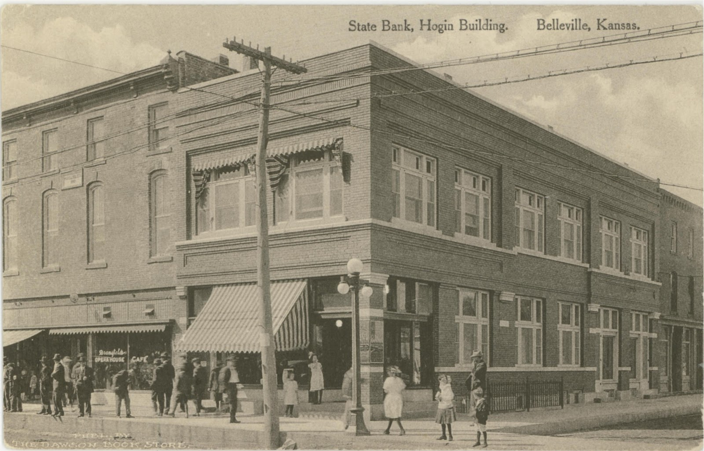
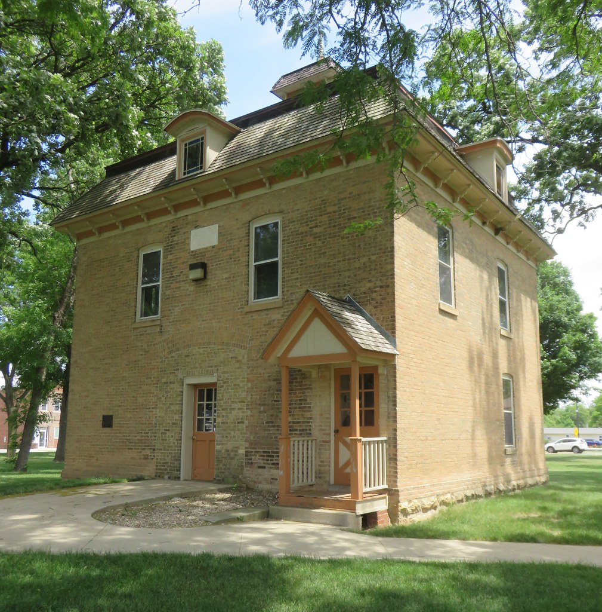
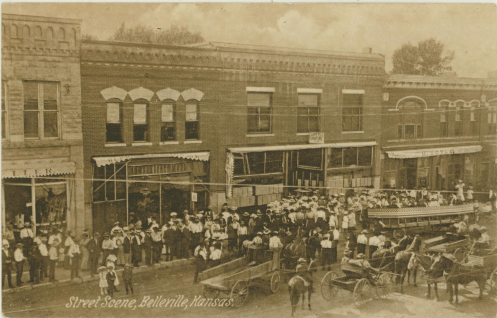
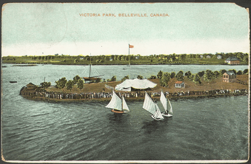

Geography of Belleville
From 1789-1790 Belleville was named Meyer's Creek, and it was just a small group of people who lived there. It isn't confirmed how many resided at this time, but in 1816 it was officially renamed as Belleville in honour of Lady Arabella Gore, and the recorded population was only about 100-150 residents. Since that time, the city covers approximately 247.25 square kilometres of land. Its location near the water and the river gives Belleville a unique landscape and contributes to the town's natural surroundings. Being located along the Bay of Quinte also gives residents and visitors opportunities to enjoy the area's outdoor scenery and waterways.